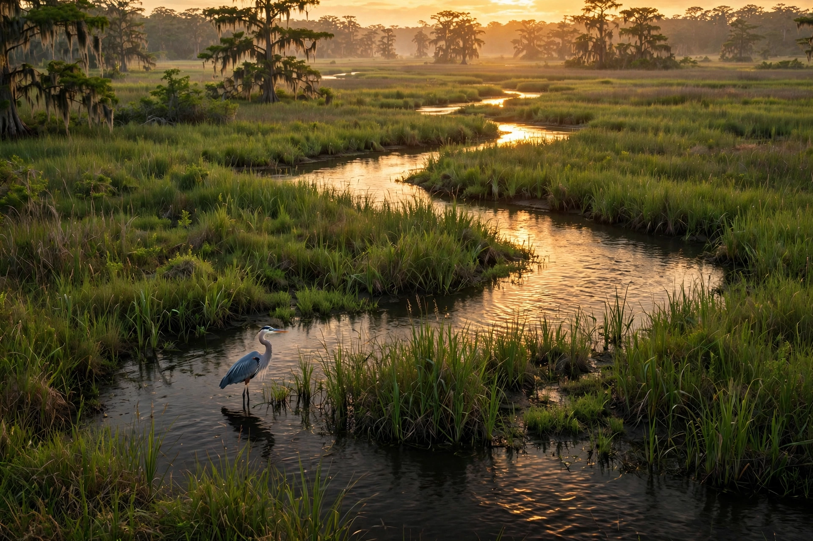
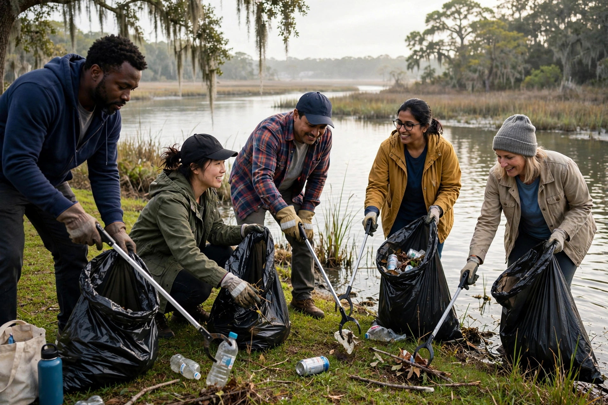
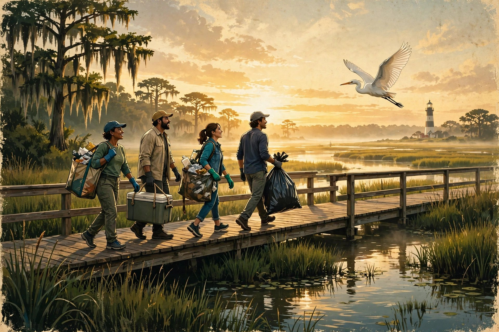
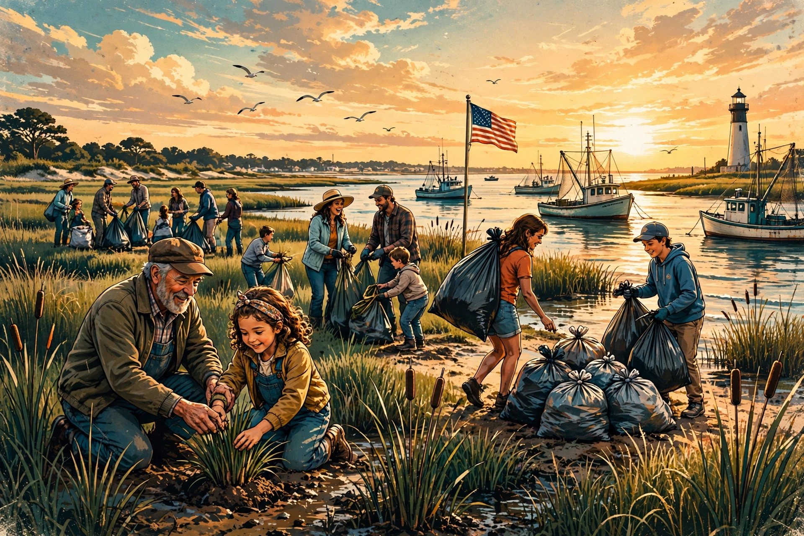
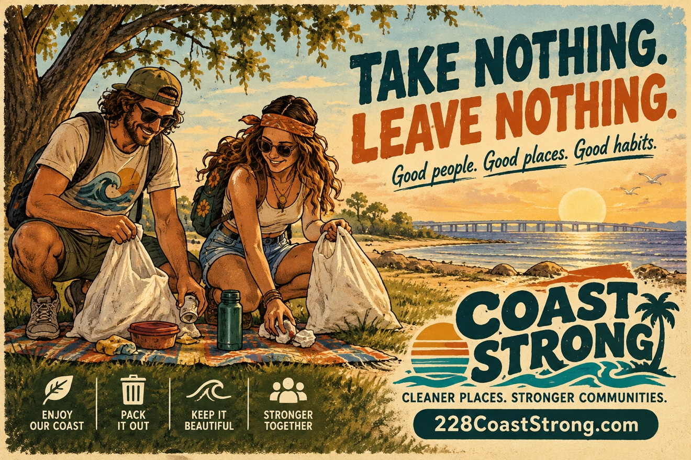

Your first step for the coast
Find a starting point for volunteering, classroom ideas, useful supplies or sharing your skills.
Read the guide →
COAST STRONG
This is our community. This is our pride. This is our coast.
Neighbors protecting our water, our seafood, and the coast our children will inherit. All glory to God, and all credit to the community.
Coast Strong


How this started · October 15, 2026
On October 15, 2026, a dumped television and heavy plastic were found sitting in the marsh at Bayou Bernard Park (James Hill Park), 1890 Switzer Rd, Gulfport — in water that runs to the Mississippi Sound, in water our kids will grow up on.
Nobody looked away. It was photographed, reported, hauled out, and written down — what, where, when. That entry became Receipt #001, and Coast Strong was born: a neighborhood watch for the bayous, so dumping gets seen, documented, and dealt with instead of sitting in the marsh for months.
“This is our home. The planet is not corrupted by accident — it is corrupted by neglect, and neglect is a choice. We choose different. Mother Earth does not have a lobbyist. She has us.”


Bayou Watch · Report dumping
Photo first, from a safe distance. Then the alert, so neighbors hear about it right away. Then the official call. One sighting, two destinations: the neighbors, and the official channel.
🚨 DUMPING / DEBRIS ALERT — COAST STRONG WHAT: [what was seen — dumping in progress / fresh debris, what kind] WHERE: [location pin or nearest street / landmark] WHEN: [date + time seen] PHOTO: [attached] STATUS: [reported to AGENCY via CHANNEL at TIME — add once filed]
Post the filled-out alert wherever your neighborhood actually reads — group text, Facebook group, Nextdoor — and keep a copy using the log template below. This page does not receive or publish incident reports. Send identifying details through official reporting channels.
Safety — non-negotiable: Observe and report only. Never confront a dumper. No blocking vehicles, no arguments, no following anyone. Get the photo from a safe distance and let the report do the work. If anyone is in danger, call 911 — not the alert chain.
Any non-emergency city report, including dumping. Fallback: 228-868-5700 · [email protected]. Observe from a safe place and send relevant details directly to the official agency.
Cleanup of dump sites inside city limits falls to Code Enforcement + Public Works.
Illicit discharges into storm drains and waterways. [email protected]
The federal front door for spills and sudden threats — staffed by the U.S. Coast Guard, relayed to the EPA / Coast Guard on-scene coordinator.
State lead on water quality and illegal dumping. Emergencies: MEMA 24/7 at 1-800-222-6362 notifies MDEQ's response team.
Coastal and marine resources, Biloxi. [email protected] · Co-organizer of the Mississippi Coastal Cleanup.
Federal violation form. EPA Region 4 customer service: 800-241-1754.
Debris in navigable waters and unauthorized wetland fill — Clean Water Act §404 country.
Source: MDEQ illegal-dumping guidance, checked October 25, 2026. Do not confront, follow or publicly identify people.
Community Log · Keeping good records together
A report that's written down is easy to follow up on and easy for the next neighbor to build on. Copy the format, start your entry the day you file, and keep it where the crew can see it. This page does not submit or store your report — the log is yours to keep and share.
COAST STRONG — COMMUNITY LOG ENTRY DATE/TIME: [when the report was made] AGENCY: [who it went to] CHANNEL: [phone / email / online form] REPORTED: [what was reported — dumping, debris, source point] RECEIVED BY: [name, ticket/case number, or "awaiting confirmation"] RESPONSE: [what the agency said or did — update as replies come in] FOLLOW-UP SENT: [date + channel, or "none yet"]
The first entry is already written: the Bayou Bernard Park find, photographed and reported on Oct 15 — Receipt #001. Every call and email that follows it goes on the same entry.
COAST STRONG — RECEIPT #001 DATE/TIME: Oct 15, 2026 LOCATION: Bayou Bernard Park (James Hill Park), 1890 Switzer Rd, Gulfport REPORTED: Dumped television and heavy plastic in the marsh (drains to Mississippi Sound) STATUS: Photographed, reported, hauled out, and logged — founding entry of Coast Strong
The folks at these agencies juggle a lot of calls. If a week passes without word, take the next step — with a thank-you for their help so far — and log it on the same entry.
Email the same agency contact, referencing the original date and ticket number, asking for status in writing.
Ask the agency for its records on the reported site, so the crew can see what's been done and where a hand is still needed.
City council, county supervisor, state reps — share the log entries so they can see the need and lend their support.
The log, the photos, and neighbors pitching in together — a well-documented community cleanup is a story worth sharing.

Your coast. Your part.
Care about this water? Start with one thing you can do. Choose your route and send the crew a short email about how you would like to help.
Join through the Bayou Watch form
Opens the existing Google Form in a new tab.
Help with a supervised cleanup, documentation, supplies or outreach. Tell us your city and the kind of help you can offer.
VolunteerStudents can help record cleanup data, create approved flyers or take part in supervised activities. Under 18? Have a parent, guardian or teacher coordinate with us.
StudentTeachers, families and groups: ask about an activity that fits your ages, interests and available adult supervision.
Teacher or groupThese links open your email app. Review and send the message there; this page does not submit or store your details. You can also write directly to [email protected]. Please do not send children's private details or medical information.
Bring one idea to a parent, teacher or friend: learn about the bayou, design a flyer with permission before posting it, or ask an adult to coordinate a cleanup. Adults can use the Mississippi Coastal Cleanup supply-bin request; availability and approval come from that program.
No Coast Strong cleanup is currently confirmed. Joining the conversation is an expression of interest, not event registration. Confirmed activities will include a date, time, location, adult contact and weather plan before anyone is asked to attend.
The neural network · Outreach directory
Coast Strong doesn't stand alone — it plugs into every crew, program, and partner already caring for this water, from the Gulfport 311 desk to the global Ocean Trash Index, and we're grateful for every one of them. Filter by level, open a card, and take the best first move listed. Where a letter is the move, it's a drafted outreach letter — nothing sends without a real person's review of the exact text.
Showing the local organizations first. Check a level to narrow the board, or show all 24.
A standing program (MSU Extension + Mississippi Marine Debris Task Force), and part of Ocean Conservancy's International Coastal Cleanup — every item logged becomes global data. All 9 of its 2026 sites are beach/harbor frontage. It runs its own events on its own schedule; Coast Strong makes no call for its sites.
Best first move: If you take part in the official program, register and get your site details directly from its official event page. Nothing on this page signs you up for it or calls you to one of its sites.
Staffed by the U.S. Coast Guard, 24/7 — the single federal point of contact for spills and sudden threats to water. A report here is relayed to the predesignated on-scene coordinator: EPA inland, Coast Guard in the coastal zone. This is how a big incident gets the fastest, best-coordinated help.
Best first move: Use it when there's an active discharge, sheen, chemical smell, or immediate danger — and log the call in the Community Log.
The federal environmental agency for Mississippi: water pollution, illegal dumping, and wetland protection under Clean Water Act §404.
Best first move: File the violation form alongside your city report, and note it in the Community Log so the crew can follow along.
The federal marine-debris tracker. The Marine Debris Tracker app logs debris with GPS and photos straight into NOAA's national dataset — the federal mirror of the global Ocean Trash Index.
Best first move: Log the Bayou Bernard find in the Tracker app with photos and GPS so it's in the federal dataset, not just ours.
Stated plainly, because honesty is the whole brand: FEMA does not clean bayous. FEMA money moves only after a presidential disaster declaration requested by the governor, plus hazard-mitigation grants governments apply for. Routine dumping isn't its mission — the pollution chain runs NRC → EPA/Coast Guard coordinator → MEMA. If a storm ever scatters debris coast-wide, FEMA enters through MEMA then.
Best first move: None for a dump site — file with NRC/EPA/MDEQ instead. Keep this card handy so every report goes straight to the folks who can act on it.
State lead on water quality, pollution control, and illegal dumping into state waters. Its public monitoring focuses on beach bacteria — which is exactly why neighbors logging what they see in the bayous is such a help to everyone.
Best first move: Call the report in, get a name or ticket number, and log it the same day.
The state partner for the Sound and the bayous, based in Biloxi, and co-organizer of the Mississippi Coastal Cleanup with the Marine Debris Task Force. Its Seafood Technology Bureau is the water-testing lane — what lives in this water ends up as Mississippi seafood.
Best first move: Report the debris, and ask DMR to log the bayou site so it is on the record.
State coordination: runs the State Emergency Operations Center and links county EMAs to state and federal help. MEMA coordinates; it doesn't do environmental enforcement — but its 24/7 line is the fastest route to MDEQ's emergency team.
Best first move: Hazmat-scale incident only — otherwise MDEQ and 311 are your first calls.
Fastest first call for a specific dump site inside city limits. The city's own guidance: report dumpers through 311 and photograph the vehicle and license plate.
Best first move: File the 311 report the day you see it — city, county, state, and federal reports go in parallel, all logged.
For trash and debris complaints in unincorporated county areas — the county side of the line when a dump site sits outside city limits.
Best first move: Use the county complaint route for county land; the zoning form has an explicit Trash/Debris category.
The Mississippi Coastal Cleanup is part of the International Coastal Cleanup, running since 1986. Data logged through the Clean Swell app uploads instantly to the Ocean Trash Index, the world's largest marine-debris database.
Best first move: Share the documented Bayou Bernard find with the cleanup team, so the bayou debris is counted in the same data as the beaches.
Built its name on stopping plastic in rivers before it reaches the ocean. Bayou Bernard drains to the Mississippi Sound — the tap is still running in America's bayous, and here's a community turning it off by hand.
Best first move: The master outreach letter, global variant, with the documented Bayou Bernard find attached.
A grassroots chapter network built for exactly this: local water, local people, clean-water testing and advocacy.
Best first move: Ask whether a Mississippi Gulf Coast chapter or regional contact exists, and how a Gulfport crew plugs into their network.
Runs the Great Global Cleanup. A documented local cleanup with photos and pound counts is their native currency.
Best first move: Share the standing Bayou Bernard watch with the Great Global Cleanup network, with the documented find and reports as they build.
A cleanup company with a huge public audience; partnerships are their front door. Amplification, not money, is the ask.
Best first move: Partnerships email — a working crew in Gulfport with real numbers, asking to be amplified.
A global alliance of 1,300+ organizations. Groups can apply to join — which puts Gulfport's name on a global roster.
Best first move: Coalition application plus a short note to the press inbox with the public statement attached.
The UN's global anti-plastic campaign — and the Mississippi River Basin itself has joined Clean Seas, so the Gulf Coast is already inside this story. Honest note: Clean Seas takes pledges from governments, companies, and organizations — there is no citizen tip inbox, and we won't pretend otherwise.
Best first move: Public alignment — post the Gulfport facts under #CleanSeas and let the orgs above carry it upward.
The Gulf's own clean-water coalition, New Orleans-based, with a long Mississippi organizing history. Clean water and healthy marshes are their home turf — and we're glad they're on this water.
Best first move: Call, don't email. Tell them about Bayou Bernard, ask who their Mississippi person is now, and offer the community log as it builds, and ask how Coast Strong can support their work.
Runs a public “Report an Incident” channel with photo upload, built for citizens who find pollution. Their patrol ground is the lower Mississippi River in Louisiana — Bayou Bernard is outside it, but they're the closest Waterkeeper and a referral costs nothing.
Best first move: File the Bayou Bernard find through the incident form with photos, and ask plainly which Waterkeeper covers the Mississippi Sound.
Protects Mississippi coastal marsh, including the Pascagoula system, with a coastal office in Ocean Springs — one county over from the bayou.
Best first move: A short letter to the Mississippi chapter — neighbors cleaning the marsh, asking to be connected to their coastal team.
Mississippi's coast is bird nursery ground — debris in the marsh is habitat damage, and Audubon Delta staff already work Gulfport-area sites.
Best first move: One page to the Policy Director: the find and the ask — who on the coastal team should receive Bayou Watch updates?
The organized community presence already on our home watershed: Turkey Creek residents protecting their creek's natural and cultural resources, assisted by the Land Trust — which also holds the Turkey Creek Greenway. Bernard Bayou has no dedicated friends-of group yet. That's a seat Coast Strong can grow into, standing next to the neighbors who've done it longest.
Best first move: Introduce Coast Strong as a neighbor, not a rival — offer help watching the water, and ask what the watershed veterans wish someone had told them at the start.
The coast's own newsroom. A documented citizen cleanup — neighbors pitching in, with photos and results to share — is a story worth telling.
Best first move: Call the news desk with the documented find in hand.
AP's Jackson reporting feeds every paper in Mississippi. The media tip is written and paste-ready: who, what, when, why it matters, and photos of the documented find available.
Best first move: Share the documented find and the Bayou Watch reports as they build.
Coast wide · Three watches, one coast
The watch stands in three places, west to east across the Mississippi Gulf Coast. Same routine at every post: see it, photograph it from a safe distance, report it, log it. A watch post is not an incident — it means somebody is looking.
Bayou Bernard · Harrison County
Where Coast Strong started. Bayou Bernard and its creeks — Turkey Creek and Flat Branch — watched by the neighbors who live on them. The Oct 15 find at Bayou Bernard Park is Receipt #001.
Tchoutacabouffa River · Back Bay of Biloxi
Biloxi's own river, winding through the city into Back Bay — the working water behind Biloxi's seafood fleet. A standing watch post: nothing reported here yet, and that's the point of a watch.
Pascagoula River · Jackson County
One of the last great free-flowing rivers in America, running through Jackson County down to the Sound. Same watch, east end of the coast: photo first, report it, log it.
Local water intel
One connected system — bayou, creeks, lake, and seaway draining to the Mississippi Sound. If you live near Lemoyne Blvd, Dedeaux Rd, Canal Rd, or Orange Grove, this is your water too.
The main stem — monitored from Highway 49 to the Industrial Seaway, with MDEQ stations at Orange Grove and off Canal Rd. The Oct 15 TV and plastic were found in its marsh at Bayou Bernard Park.
Flows ~12.9 miles and joins Bernard Bayou just north of the airport. Named one of America's 10 Most Endangered Rivers in 2021. Its historic community has defended this watershed for years.
The small tributary with an MDEQ monitoring station at the Dedeaux Road crossing — the closest named monitored stream to the Lemoyne Blvd neighborhood.
Where the system meets the Sound. Past Renew Our Rivers crews pulled 4.5 tons at Gulfport Lake / Industrial Seaway and 5.25 tons at the Seaway & Bayou Bernard.
The next watershed northeast, near Lyman — part of the same coastal plain, watched by the same neighbors.
State monitoring covers beach bacteria advisories (text “MDEQbeach” to 95577). Cleanup tallies come after the fact. The bayous get their extra eyes from the neighbors who live on them.
Families on this coast live on this water — we raise our kids on it, take them to the rivers, fish it, swim it, grow up on it. That's why the tires dumped in those rivers cut so deep. This isn't somebody else's water. It's ours.
The crabs, the shrimp, the oysters, and the men and women who work that water for a living. What's dumped in the marsh ends up in the same water our seafood comes out of. Protecting the bayou is protecting the table, the industry, and the coast's name.
BEFORE photos of a dump site from a safe distance · AFTER photos from the same angles once it is cleared · record date, site, what was found, and who it was reported to · file the log and photos the same day · share documented results publicly — people trust what they can see.
Coast Kids · Learn with a grown-up
Try a tiny coast-care challenge together. Real cleanup activities need an adult, safe ground and the right supplies.
What would you do?
A candy wrapper on a dry path
Choose an answer to see why it helps.
This activity runs on this page. No account, name, photo or score is collected by it. You can print this section using your browser's Print command.
Ask a teacher or parent: “What would make our coast healthier, and what can we safely do together?”
Ideas into action
Practical guides for neighbors, students, teachers and families ready to do one useful thing together.
Find a starting point for volunteering, classroom ideas, useful supplies or sharing your skills.
Read the guide →Record what you saw, where and when, take photos safely, then use the official reporting channels.
Read the guide →Common questions
No Coast Strong cleanup date is currently confirmed. Before asking anyone to attend, confirmed activities will include a date, time, location, adult contact and weather plan.
Yes—bring your ideas. A parent, guardian or teacher must coordinate participation with us and arrange appropriate adult supervision.
No. The links open a draft in your own email app. Review and send it there. An email expresses interest; this site does not register you for an event or store a signup.
This site does not receive or submit incident reports. Use the official reporting channels and send identifying details directly to the responsible agency. Observe from a safe place and never confront anyone.
Live Coast Strong
Every visit is another chance to care for Mother Earth.
Connecting to live activity…
Tracking begins with the first recorded page view.
Counts reflect recorded page loads, not individual people. Reloading or changing language adds a page view; separate tabs can count as separate sessions. Automated traffic and blocked tracking can affect totals. Updates every 30 seconds while this page is visible.
We put care into this site, and your perspective helps our team make it stronger. Share a thoughtful suggestion, a different perspective, or something we could do better.
Review and send your message in your email app.
Our sponsors
The Coast Strong sponsor program is how local businesses put their name behind clean water and stronger communities. These are the businesses standing with us — please stand with them.

Moore Electric
Electrical services for homes and businesses across the Mississippi Gulf Coast.
Kingdom Connections Consulting, LLC
“Clarity for your next business move.”
Small-business lending consulting — funding guidance that helps new businesses start, grow, and borrow with a plan.
Want your business standing here? Become a sponsor